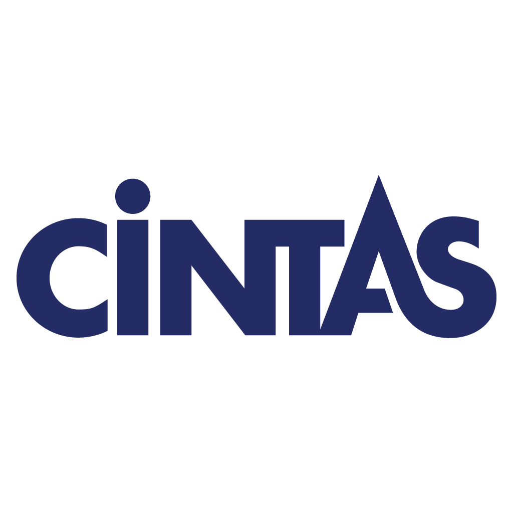

Shiv Raj Bangad
Master of Science in Business Analytics candidate at Purdue University (Dec 2026) and incoming Business Intelligence Engineer Intern at Amazon (AWS Analytics). Specializing in production PySpark & SQL data pipelines, LLM agent systems (Bedrock, RAG), and statistically validated machine learning at scale.
Core Technical Pillars
Operating at the intersection of production data engineering, enterprise LLM architectures, and high-stakes statistical modeling.
Distributed Data & Cloud Engineering
Architecting scalable multi-terabyte ETL/ELT pipelines using PySpark, AWS Glue, Athena, and S3 Parquet. Designing deterministic AST-based SQL guardrails that validate 100% of LLM queries against data contracts.
Autonomous AI & RAG Systems
Developing enterprise LLM agents on AWS Bedrock AgentCore, Haystack, and Azure. Implementing containerized MCP (Model Context Protocol) tool servers with SigV4 authentication and dense vector semantic retrieval.
Machine Learning & Quantitative Modeling
Building competitive predictive models (XGBoost, DeBERTa, CatBoost) with genetic algorithms and super-learner stacking. Developing statistical anomaly detection and point-in-time quantitative forecasting.
Professional Experience
Demonstrated impact across cloud infrastructure, private equity analytics, enterprise anomaly detection, and insurance underwriting pipelines.
Financial Analyst Intern
BDT & MSD Partners (Private Equity)
Chicago, ILData Scientist Co-op
UC Center for Business Analytics
Cincinnati, OH
Data Analyst Intern
Great American Insurance Group
Cincinnati, OHFeatured Projects & Research
Competition-winning machine learning architectures, distributed PySpark pipelines, enterprise agentic governance, and quantitative finance models.
Agentic AI Observability & Platform Advisor
Explore Technical Deep-Dive
Architecture & Governance Framework
The cockpit ingests live telemetry logs from distributed Databricks runtime clusters and Snowflake warehouse query histories. A specialized autonomous agent evaluates query execution plans and auto-generates optimized PySpark DataFrame transformations before deployment.
CI/CD Pipeline Integration
Integrated as an automated pull-request gate in Azure DevOps: agent inspects proposed PySpark code modifications, simulates execution against data contracts, and blocks anti-patterns (such as un-partitioned shuffle writes or Cartesian cross-joins).
Creator Recommendation Platform & Distributed RAG Engine
Explore Technical Deep-Dive
Distributed Vector Ingestion Pipeline
Processed unstructured video titles, descriptions, and audience engagement comments across 1,000+ YouTube channels using PySpark user-defined functions (UDFs). Embeddings were stored in a vector index to enable sub-second semantic retrieval of content whitespace trends.
Statistical Validation & Guardrails
Utilized simulated A/B testing environments with bootstrapping to stress-test recommended publishing cadences against 12 months of historical YouTube viewership telemetry.
Automated Fact-Verification Engine for EdTech
Explore Technical Deep-Dive
Cross-Attention Sequence Structuring
Structured input tensors as [CLS] Q + A [SEP] Context [SEP], forcing the transformer's cross-attention heads to evaluate the candidate answer directly against reference context rather than relying on superficial keyword overlap.
Stratified Ensemble Soft-Voting
Trained 5 distinct folds across a 10:1 imbalanced dataset. Combining out-of-fold probability vectors via soft-voting reduced predictive variance across nuanced contradiction cases and tightened decision boundaries.
Predictive Modelling for Firm Bankruptcy via Evolutionary Ensembles
Explore Technical Deep-Dive
3-Stage Super-Learner Pipeline
Stage 1 (Bagging): 10 XGBoost + 10 LightGBM models trained on distinct seeds using 5-Fold CV. Stage 2 (Evolutionary): Custom genetic algorithm generating candidate arithmetic combinations. Stage 3 (Judge): Calibrated Logistic Regression acting as a meta-classifier on the 21-dimensional Out-of-Fold matrix.
Dual-Imputation Strategy
Preserved missingness signal in tree splits with constant imputation (-999) for standard gradient boosting, while routing mathematical combinations through median imputation to prevent synthetic ratio distortions.
Point-in-Time Alpha Forecasting via Bayesian & Kernel Methods
Explore Technical Deep-Dive
Zero-Leakage Point-in-Time Alignment
Aligned lagged corporate 10-Q filing dates with macroeconomic indicators using strictly expanding rolling-window statistics, ensuring that no future information leaked into historical covariance matrices.
Orthogonal Dimension Reduction
Used Principal Component Analysis to distill dozens of correlated financial ratios into orthogonal factor loadings, mitigating collinearity across non-linear kernel support vector regression.
Education & Certifications
Rigorous quantitative training in business analytics, computational finance, and industry-standard cloud certifications.
Purdue University
Daniels School of Business
University of Cincinnati
Carl H. Lindner School of Business
Official Cloud & AI Certifications
AWS Certified Cloud Practitioner
Amazon Web Services • Credentialed in Cloud Architecture, S3, Glue, Lambda & Security
Microsoft Certified: Azure AI Fundamentals
Microsoft (AI-900) • Verified in Machine Learning Workloads, Computer Vision & NLP
Skills & Technology Matrix
Extensive hands-on toolset spanning distributed cloud data engineering, deep learning frameworks, and analytics modeling.
Data Engineering & Analytics
Machine Learning & MLOps
Languages & Querying
Data Platforms & Storage
Let's Discuss Opportunities
I am actively connecting with recruiters, engineering managers, and technical teams for Data Science, AI Engineering, and Analytics Engineering roles.